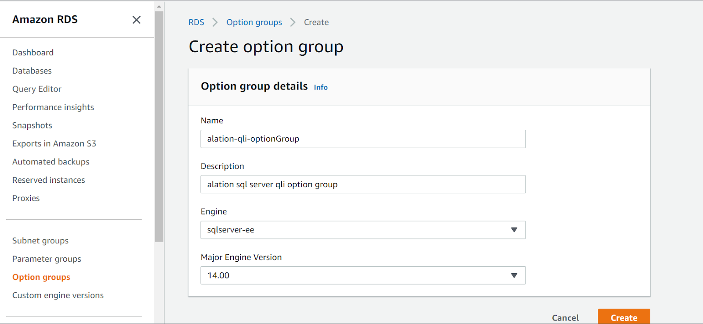
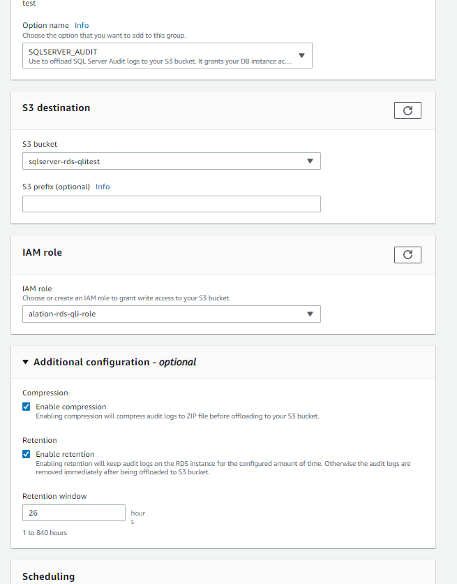
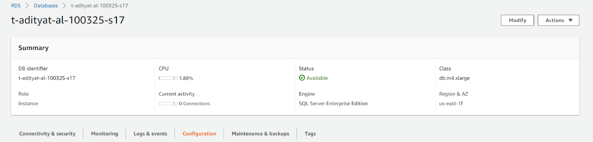
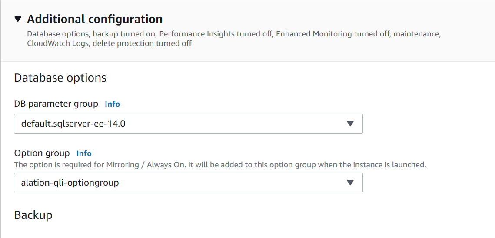
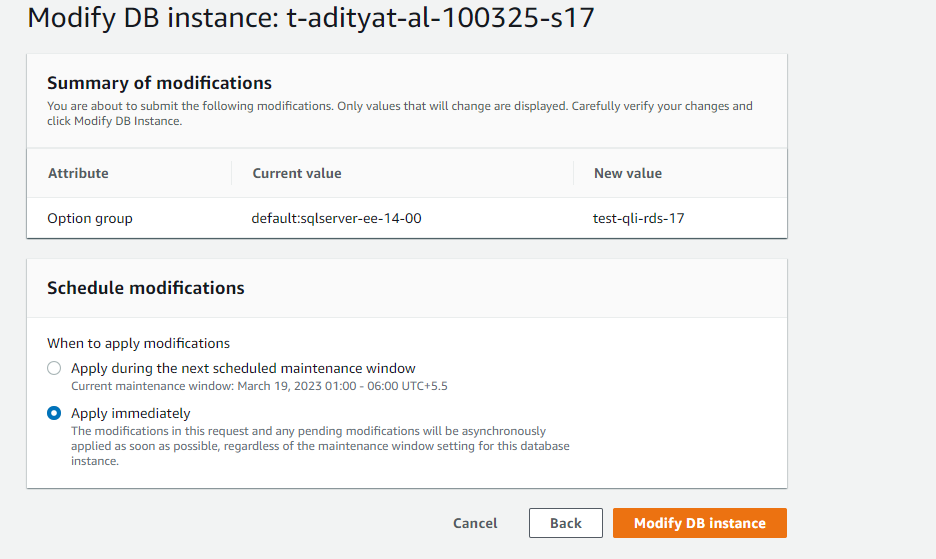

SQL Server RDS: Query Log Ingestion¶
Alation Cloud Service Applies to Alation Cloud Service instances of Alation
Customer Managed Applies to customer-managed instances of Alation
Alation supports the SQL Server Audit method to log queries for ingestion into Alation.
QLI Setup for SQL Server RDS¶
Perform the following steps to configure the prerequisites for SQL Server RDS QLI:
In the AWS console, go to Amazon RDS > Option groups > Create option group.
Provide the values in the following fields and click Create.
Name
Description
Engine
Major Engine Version
Note
The values of Engine and Major Engine Version must be the same values that were selected while creating the database.
Go to Option groups and select the newly created option group.
Click Add Option and update the following parameters with the values below:

Parameter
Value
Option Name
Option name
SQLSERVER_AUDIT
Amazon S3 Destination
S3 Bucket
Choose the S3 bucket where you want to store the audit log files.
S3 Prefix (Optional)
Specify a file path prefix without forward slash if you want to store the audit files in a folder in the bucket.
IAM Role
IAM Role
Choose the appropriate IAM role which has access to the S3 bucket or select Create a new role.
Additional Configuration (Optional)
Enable compression
Select the Enable compression checkbox.
Enable retention
Select the Enable retention checkbox.
The retention window value depends on how often you plan to run the stored procedure that reads the audit logs into the QLI table. If you plan to run the stored procedure once a day, then set the value to 25 (24 hours + 1 hour for overlap).
Go to RDS > Databases and select the database to which you want to attach the auditing.
Associate the option group with the RDS instance. Click Modify > Additional Configuration > Database options and select the Option group.
Select Apply immediately and click Modify DB Instance. The option group should now be attached to the database.
Note
Applying immediately will restart the database. If the modification are done immediately the database will show status as Modifying and it will not be available for a minute till the status changes to Available.
Configuration on SQL Server¶
The following permissions must be granted to the user to create the SERVER AUDIT and DATABASE AUDIT SPECIFICATION:
USE master; GRANT ALTER ANY SERVER AUDIT TO <user>; GO USE <database>; GRANT ALTER ANY DATABASE AUDIT TO <user>; GORun the following script to create the SERVER AUDIT.
Note
The audit name must contain the word alation.
USE [master] GO -- FILEPATH is the path to where the audit files will be written -- It CANNOT be changed for Amazon RDS SQL Server! /* The predicates are optimized; not using a leading '%' (e.g. %DELETE%) ** is intentional. Add any additional schemas(s) or server principal ** names that you want to filter out. */ CREATE SERVER AUDIT [alation_qli_server_audit] TO FILE ( -- do NOT change the file path! -- do not configure MAX_ROLLOVER_FILES or MAX_FILES FILEPATH = N'D:\rdsdbdata\SQLAudit\' ,MAXSIZE = 30 MB ,RESERVE_DISK_SPACE = OFF ) WITH ( QUEUE_DELAY = 10000 -- do not change ON_FAILURE value! ,ON_FAILURE = CONTINUE ) WHERE ( [schema_name] <> 'sys' AND [schema_name] <> '' AND [schema_name] <> 'public' AND [database_name] <> '' AND -- [server_principal_name <> '<insert_name>' AND ( [statement] LIKE 'SELECT%FROM%' OR [statement] LIKE ';WITH%SELECT%FROM%' OR [statement] LIKE 'WITH%SELECT%FROM%' OR [statement] LIKE 'DELETE%' OR [statement] LIKE 'INSERT%SELECT%' OR [statement] LIKE 'UPDATE%FROM%' OR [statement] LIKE 'MERGE%' OR [statement] LIKE ';WITH%DELETE%' OR [statement] LIKE 'WITH%DELETE%' OR [statement] LIKE ';WITH%INSERT%SELECT%' OR [statement] LIKE 'WITH%INSERT%SELECT%' OR [statement] LIKE ';WITH%UPDATE%FROM%' OR [statement] LIKE 'WITH%UPDATE%FROM%' OR [statement] LIKE ';WITH%MERGE%' OR [statement] LIKE 'WITH%MERGE%' OR [statement] LIKE 'CREATE%TABLE%' OR [statement] LIKE 'CREATE%VIEW%' OR [statement] LIKE 'ALTER%TABLE%' OR [statement] LIKE 'ALTER%VIEW%' OR [statement] LIKE 'DROP%TABLE%' OR [statement] LIKE 'DROP%VIEW%' OR [statement] LIKE 'TRUNCATE%' OR [statement] LIKE 'USE%' ) ); GO -- enables the server audit; comment out to not enable it ALTER SERVER AUDIT [alation_qli_server_audit] WITH (STATE = ON); GO
Run the following script to create the DATABASE AUDIT SPECIFICATION.
Note
The audit name must contain the word alation.
-- insert the DB name for the database -- you want to audit queries USE [<insert_your_database_name>] GO -- verify the audit specification name contains the work 'alation' CREATE DATABASE AUDIT SPECIFICATION [alation_qli_database_audit_spec] FOR SERVER AUDIT [alation_qli_server_audit] ADD (SCHEMA_OBJECT_CHANGE_GROUP), ADD (SELECT ON DATABASE::[<insert_your_database_name>] BY [public]) WITH (STATE = ON) GO
Run the following script in the database to create the stored procedure.
USE [<insert_your_database_name>] GO SET ANSI_NULLS ON GO SET QUOTED_IDENTIFIER ON GO CREATE OR ALTER PROC [dbo].[extract_audit_logs_sp] @ingestionlag SMALLINT = 2 AS /*** @ingestionlag at minimum should match the alation_conf setting value *** alation.query_ingestion.auto_ingestion_lag_days *** (default value is 2). */ DECLARE @filepath_current NVARCHAR(128); DECLARE @filepath_transmitted NVARCHAR(128); SET XACT_ABORT, NOCOUNT ON; SET @ingestionlag = -ABS(@ingestionlag) -- sets lag to negative number SET @filepath_transmitted = 'D:\rdsdbdata\SQLAudit\transmitted\*alation*.sqlaudit' SET @filepath_current = 'D:\rdsdbdata\SQLAudit\*alation*.sqlaudit' BEGIN TRY -- first create table to hold audit logs if doesn't exist IF OBJECT_ID('dbo.alation_audit_logs','U') IS NULL BEGIN CREATE TABLE dbo.alation_audit_logs ( event_time DATETIME2(2) NOT NULL ,sequence_group_id VARBINARY(85) NOT NULL ,sequence_number INT NOT NULL ,[statement] NVARCHAR(4000) NULL ,server_principal_name NVARCHAR(128) NULL ,session_id SMALLINT NOT NULL ,[database_name] NVARCHAR(128) NULL ,[schema_name] NVARCHAR(128) NULL ,database_schema NVARCHAR(128) NULL ,application_name NVARCHAR(128) NULL ,duration_milliseconds BIGINT NULL ); END; -- drop first index for upcoming INSERT...SELECT min logging IF EXISTS ( SELECT 1 FROM sys.indexes WHERE [object_id] = OBJECT_ID('dbo.alation_audit_logs','U') AND name = 'CLIX_audit_logs_seq_id_seq_num' ) BEGIN DROP INDEX CLIX_audit_logs_seq_id_seq_num ON dbo.alation_audit_logs; END; -- delete old logs but not those in the ingestion lag BEGIN DELETE FROM dbo.alation_audit_logs WHERE event_time < CAST(CAST(DATEADD(dd, @ingestionlag, sysutcdatetime()) AS DATE) AS DATETIME2(2)); END -- delete is done now drop index IF EXISTS ( SELECT 1 FROM sys.indexes WHERE [object_id] = OBJECT_ID('dbo.alation_audit_logs','U') AND name = 'NCIX_audit_logs_event_time' ) BEGIN DROP INDEX NCIX_audit_logs_event_time ON dbo.alation_audit_logs; END; -- first read the logs from the transmitted folder BEGIN INSERT INTO dbo.alation_audit_logs WITH (TABLOCK) ( event_time ,sequence_group_id ,sequence_number ,[statement] ,server_principal_name ,session_id ,[database_name] ,[schema_name] ,database_schema ,application_name ,duration_milliseconds ) SELECT event_time ,sequence_group_id ,sequence_number ,[statement] ,server_principal_name ,session_id ,[database_name] ,[schema_name] -- fixes issue of non qualified and partially qualified table names -- not being resolved ,[database_name] + CASE WHEN [schema_name] IS NULL OR [schema_name] = '' THEN '' ELSE ('.' + [schema_name]) END ,application_name ,duration_milliseconds -- get all the logs with date greater than max datetime from last extraction FROM msdb.dbo.rds_fn_get_audit_file(@filepath_transmitted,default,default) WHERE event_time > ISNULL((SELECT MAX(event_time) FROM dbo.alation_audit_logs),'1900-01-01'); END -- second read logs from the current log file BEGIN INSERT INTO dbo.alation_audit_logs WITH (TABLOCK) ( event_time ,sequence_group_id ,sequence_number ,[statement] ,server_principal_name ,session_id ,[database_name] ,[schema_name] ,database_schema ,application_name ,duration_milliseconds ) SELECT event_time ,sequence_group_id ,sequence_number ,[statement] ,server_principal_name ,session_id ,[database_name] ,[schema_name] -- fixes issue of non qualified and partially qualified table names -- not being resolved ,[database_name] + CASE WHEN [schema_name] IS NULL OR [schema_name] = '' THEN '' ELSE ('.' + [schema_name]) END ,application_name ,duration_milliseconds -- get all the logs with date greater than max datetime from last extraction FROM msdb.dbo.rds_fn_get_audit_file(@filepath_current,default,default) WHERE event_time > ISNULL((SELECT MAX(event_time) FROM dbo.alation_audit_logs),'1900-01-01'); END BEGIN -- add index to speed up query concatenation CREATE CLUSTERED INDEX CLIX_audit_logs_seq_id_seq_num ON dbo.alation_audit_logs (sequence_group_id ASC, sequence_number ASC); -- for deletes and view optimization datetime index CREATE NONCLUSTERED INDEX NCIX_audit_logs_event_time ON dbo.alation_audit_logs (event_time); END; END TRY BEGIN CATCH IF @@TRANCOUNT > 0 ROLLBACK TRANSACTION -- should not be > 0 DECLARE @msg NVARCHAR(2048) = ERROR_MESSAGE() RAISERROR (@msg, 16, 1) RETURN 1 END CATCH GORun the following script to create a VIEW for QLI.
USE [<insert_your_database_name>] GO CREATE OR ALTER VIEW alation_qli_view AS SELECT -- the following columns and values are required cat.server_principal_name as userName, cat.session_id as sessionId, cat.event_time as startTime, TRIM(seq.TextData) as queryString, cat.duration_milliseconds / 1000 as seconds, cat.database_name as defaultDatabases, cat.event_time as sessionStartTime, 'N' as cancelled FROM dbo.alation_audit_logs cat -- SQL Server audit stores queries in a NVARCHAR(4000) wide column. -- Longer queries are broken up and stored with a sequencer. This JOIN -- puts them back together again before importing into Alation so -- they don't get discarded. INNER JOIN ( SELECT sequence_group_id, STRING_AGG(CONVERT(NVARCHAR(max),statement),'') WITHIN GROUP (ORDER BY sequence_number ASC) AS TextData FROM dbo.alation_audit_logs GROUP BY sequence_group_id ) seq ON cat.sequence_group_id = seq.sequence_group_id; -- date range to pull will be controlled by Alation. -- If manual will be range selected by user, if scheduled will -- be last import date to ingestion lag date (typically 2 days lag) GO
Schedule the Stored Procedure¶
The stored procedure must be scheduled to refresh the table using the following methods:
SSMS SQL Server Agent¶
Schedule the stored procedure in SQL Server Management Studio, refer to Create a Schedule.
Compose Scheduled Query¶
Perform the following query in Compose to schedule the stored procedure:
In Compose, connect to the Amazon RDS account that will call the stored procedure.
Execute the following query:
EXEC [test].[dbo].[extract_audit_logs_sp] @ingestionlag = 2;Schedule the query to not run at the same time the queries are being imported.
Configure QLI in Alation¶
Make sure that the Use XEvents checkbox is unchecked as the Extended Events method is not supported.
Connector Settings¶
Table-Based QLI¶
Provide the view name created for QLI in Configuration on SQL Server section in the Table Name field.
Custom Query-Based QLI¶
When you cannot create a table or view, you can use a Custom QLI Query to perform QLI. Provide the expected query structure as shown below and click Save:
SELECT
-- the following columns and values are required
cat.server_principal_name as userName,
cat.session_id as sessionId,
cat.event_time as startTime,
TRIM(seq.TextData) as queryString,
cat.duration_milliseconds / 1000 as seconds,
cat.database_name as defaultDatabases,
cat.event_time as sessionStartTime,
'N' as cancelled
FROM dbo.alation_audit_logs cat
-- SQL Server audit stores queries in a NVARCHAR(4000) wide column.
-- Longer queries are broken up and stored with a sequencer. This JOIN
-- puts them back together again before importing into Alation so
-- they don't get discarded.
INNER JOIN (
SELECT sequence_group_id,
STRING_AGG(CONVERT(NVARCHAR(max),statement),'') WITHIN GROUP (ORDER BY sequence_number ASC) AS TextData
FROM dbo.alation_audit_logs
GROUP BY sequence_group_id
) seq
ON cat.sequence_group_id = seq.sequence_group_id
WHERE cat.event_time BETWEEN (STARTTIME) AND (ENDTIME);
Note
For Automated QLI, the stored procedure must be run once before performing the QLI.